光之少女
實在是熱的太誇張了，我學紅山口那間餐廳的老闆，只穿一條四角褲打赤膊睡覺。
但是依然熱的全身冒汗，縱使房間的窗戶全部打開，也送不了什麼涼爽的風進來。
成大字形躺在床上，身體不能有交叉重疊的部分，不然會更加悶熱，氣溫一整個晚上都沒有降低在35度以下過...
半夜實在熱的受不了，爬起來去浴室沖個冷水澡，回來才勉強入睡。
睡醒後頭有點痛，這就是所謂的夏季感冒嗎？
不想這麼輕易就吃藥，所以泡了杯熱呼呼的紅糖來喝，一喝又是全身暖呼呼，額頭直冒汗。
今天其實沒有任何的行程，只是單純的想要躲太陽休息一整天，最好什麼事情都不要做，讓今天維持空白。
早上趁著網吧的老闆不在，只有打掃的阿姨顧店，她不會碎碎唸又盯著我看，終於可以用自己的電腦連上網路。
網站的連線速度還是超慢，bluehost一點也沒有要解決問題的意思，又寫了好幾封英文信去抗議，通通電腦回信現在是下班時間。
處理網站的問題，讓已經有點頭痛的頭更加的頭痛，不想把生命浪費在這種蠢事上，遊記上傳完我就閃人了。
離開網吧差不多中午，整條街都是賣燒烤，中午不營業，所以就吃水餃當午餐，西北地區的餃子又變成一粒多少錢這樣賣。
點了二十顆大肉韭菜水餃，再配一大盤小蔥拌豆腐，酷熱的天，吃這樣的東西相對還算涼快。
今天的雲層比昨天稍微厚一點，所以溫度也比較低，不像昨天熱到四十五度多那麼誇張。
氣象報告說今天可能會下雨，所有人都盼著能夠降點甘霖來涼快一下，但是盼了一天雨就是不下來。
吃完午餐拎著幾個炸甜餅回去當點心，正午時分別想叫我出去給太陽曬，打算安穩的窩在房間裡頭看書。
旅館的人幫我打開門之後，發現裡面多了一隻電風扇，雖然是超古董的老舊立扇，它的歷史說不定比我的年紀還要長，
但是插上電之後真的還能轉，看著它微微的送出風來，心中大喜，中午就可以舒服的睡個午覺。
立扇是旅館一位蒙古族的女員工拿給我的，我這一間是全涉外賓館最便宜的一間，也是唯一沒有冷氣的一間。
女員工的名字叫做『格日勒』，在蒙古話中是『光』的意思，十八歲，屬馬。
她說我旅行哪裡不去，到鄯善這個熱死人的地方來幹嘛？
既然鄯善這麼熱，那妳自己又為什麼要從冬天不冷、夏天不熱的內蒙古到這裡來呢？
因為成年了，留在家裡又幫不上什麼家務，所以就到外地來工作，在中國地區，這樣離鄉背井的流動打工人口不知有多少？
我對蒙古充滿許多的幻想，問格日勒會不會騎馬？家裡是放牧的嗎？蒙古是什麼樣的地方？
格日勒家裡有兩匹馬，一匹白的、一匹紅的，白色的是格日勒的馬，她十歲的時候就會騎馬了。
問她騎馬難不難，她說很簡單，就跨上去、腳夾緊、不要掉下來就好了，聽起來好像很容易的樣子~_~
離開內蒙古，到這個格日勒所謂熱死人的地方，她說自己每天睡覺都夢到在騎馬，還有蒙古那一望無際的大草原。
沒有看過那樣的景像，真難想像一望無際的草原是什麼樣子。
在還沒到戈壁灘之前，我也不知道一望無際的沙漠是什麼景色，但如今那種死寂、遼闊、大風和酷熱已經深烙在腦海之中。
多虧格日勒的立扇，讓留在鄯善休息的這一天有點價值，中午回到旅館就陷入昏睡。
重新恢復意識的時候，已經是下午六點，今天真的是空白的一天，除了網吧、水餃、格日勒和立扇，什麼事也沒發生呢。
六點多，天空還是很亮，太陽不到十點不會下山，牽著小多去市區閒晃，在旅館買一瓶可樂消暑。
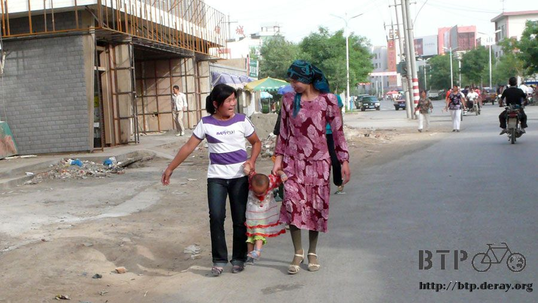
鄯善是個說大不大說小不小的地方，閒晃的時候正好是小學的下課時間。
小學要是懶的取名字，都會用當地的名稱加上編號，比較大的地方還會編到十幾號之多。
這陣子正好是中國地區的高考期間，今天是考試的其中一天，考場的氣氛可能世界各地都一樣，
教室內是希望可以金榜題名的考生，教室外則是辛苦陪考的家長，考區外就是做生意的小販。
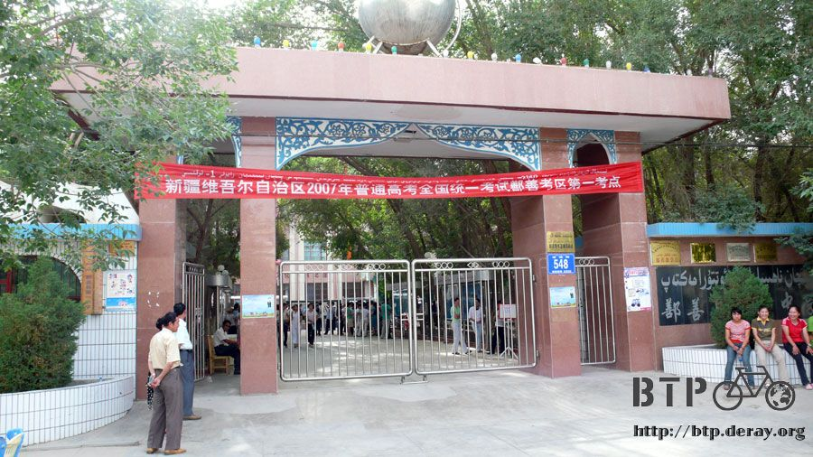
沿著大街往南走，大約五公里就會到鄯善的盡頭，真的是盡頭，因為這邊是沙漠。
進去參觀要門票，之前已經去過鳴沙山，所以這邊到過門口就算來過了，裡頭就是庫木塔格沙漠，有沙雕和人工湖。
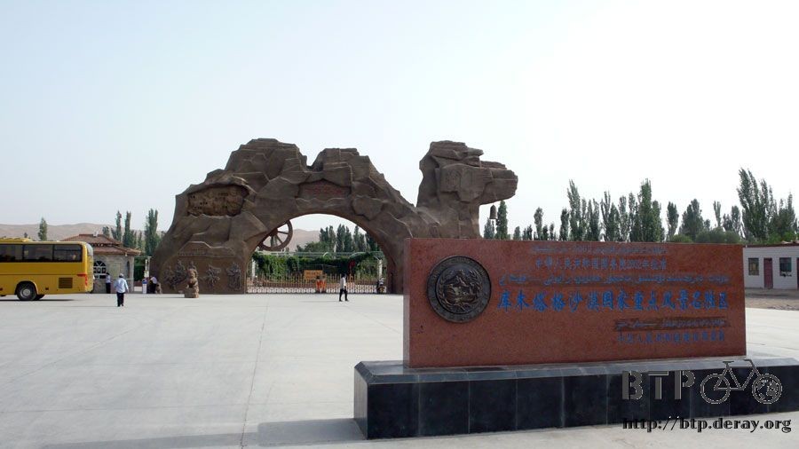
鄯善的道路種了很多的行道樹和小花小草，在這個不怎麼下雨的地方，要維持這些城市綠意很不容易。
下午七點的時候就會開始自動澆水，有灑水器或是水管，清涼的水就成了下課的小朋友最好的玩具。
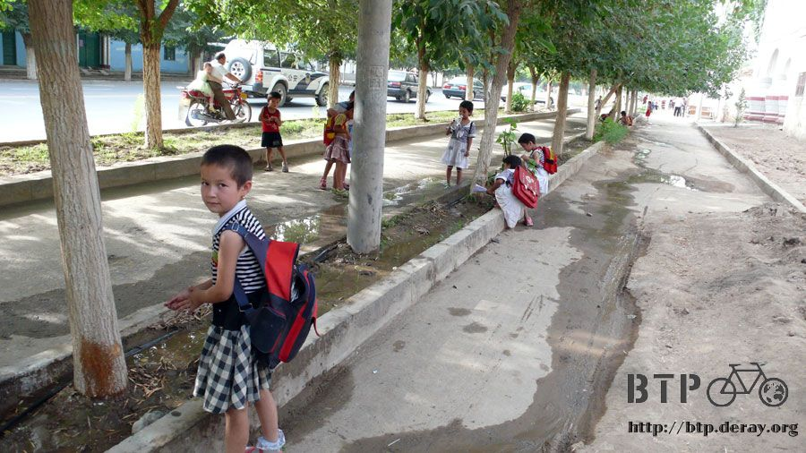
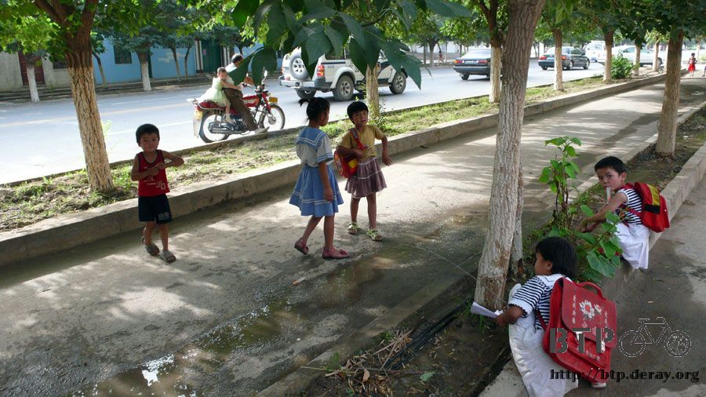
對這邊小孩來說，要滿足去迪士尼城堡玩的夢想是比較容易的:D
簡單的快樂，對我來說，只要給我一根五毛錢的冰棒，也是天大的快樂。
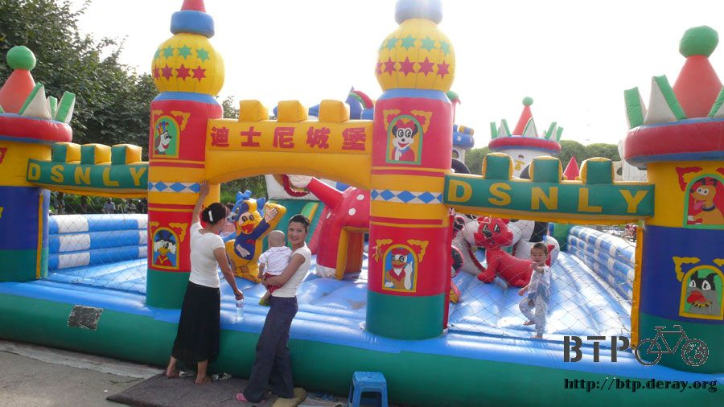
這邊已經不單單只有漢族，各式各樣的民族都有，比較多的大概就是維族，還有一些很像外國人的小孩。
他們在很小的時候就會穿耳環，蠻多部分的小孩都剃成涼快的光頭，連小女孩也不例外。
家境好一點的就騎自行車上下學，普通的當然就是走路或是搭公交車囉～
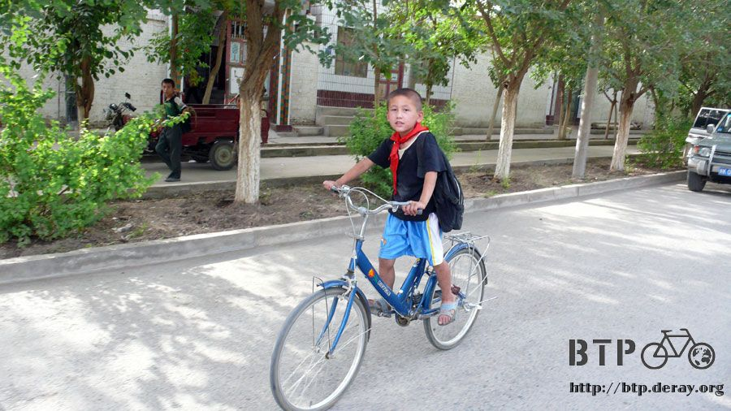
民宅的大門口畫上了很漂亮的圖案，比起冰冷的鐵門，這更加顯的有異國情調。
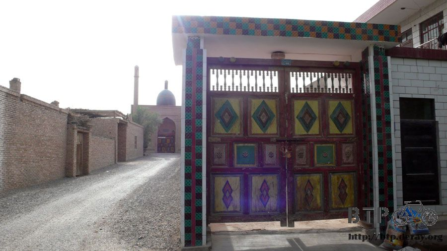
其實很多時候，我都覺得自己已經不在中國了，四周談話的內容都是聽不懂的語言，真是等不及可以出國境感受一下不同的人文。
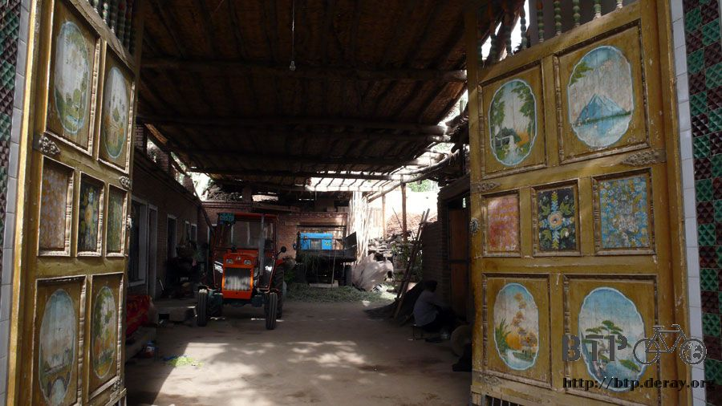
市區只閒晃了約一個小時，有賣很多的瓜類，但是實在因為天氣熱提不起胃口，啥都吃不下，荷包很省。
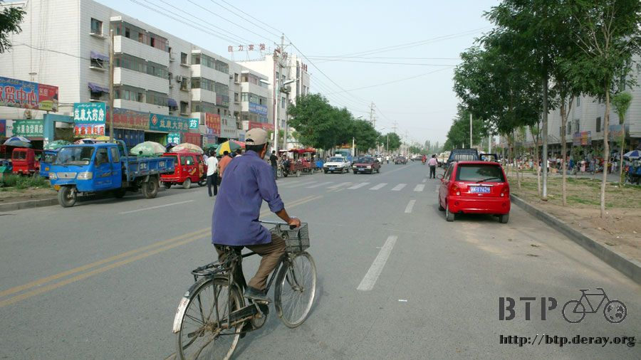
我很喜歡的小街道巷弄，大人們拉張板凳坐在門口聊天，小孩們嘻鬧的聲音，都會讓我想起自己童年的時光。
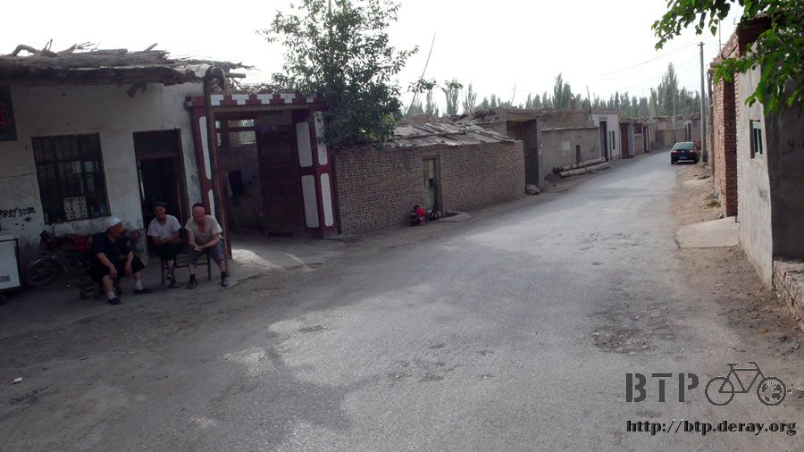

入夜真的比較涼快之後，才下樓去吃吃一些燒烤料理，明天要去吐魯番，希望老天爺賜給我一個涼快的天氣。
我的要求不多，只要溫度可以在四十度以下，就心滿意足矣。
繼續閱讀：6.7 敗給十二級強風
中國-人民幣－ 1：4.3 台幣
6.6 |
總計：54元 |
午餐大肉韭菜水餃5元、小蔥拌豆腐3元、炸甜餅2元、可樂3元、住店20元、網吧一小時2元、晚餐烤雞腿5元、烤雞翅6元、啤酒3元、雜貨店餅乾5元 |
|